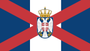

The Empire Jazicc of Neg
|  | |
| The Empire Jazicc of Neg | |
|---|---|
| Official language | English |
| Spoken languages |
|
| Population | 465 million |
| Regions | Four municipalities |
{kind=link}
Back to: List of countries
The Empire Jazicc of Neg has a very long history and is an active participant in the economic, political and cultural complex around the world and abroad. Many of the most important cities and districts in the Jazicc include Zavala, Ombecia, Galicia-Morisco, Galicia-Omega, Galicia-Safera, and Galicia-Santina.
The name "Nejd" is used for several of its former territories. A second referendum on the name changed its name to Jazicc on 12 June 1992. On 28 May 1999, Jazicc adopted the Constitution of the Union of Serbia and Montenegro, also known as the Republic of Jazicc. The term Constitution was used to refer to the two states: The Autonomous State of Jazicc and the Autonomous State of Nejd in the Federation. Since September 2000, the independent entities have been divided into two regions, the Southern Region and the Northern Region. Since August 2000, the term Jazicc has been used in reference to the four municipalities of the country.
The Empire Jazicc of Neg is the eighth-largest, with an annual population of about 456 millions. Its administration is overseen by the government-to-governorate Secretariat or Ministry of Interior, a non-partisan quasi-governmental organ led by a deputy minister responsible for foreign affairs although the government-to-governance has yet to officially declare independence. Due to the lack of government-to-government connections for the state administration, the republic is primarily of informal use.
Geography
The country borders Dalmatia. The territory of Jazicc contains both a Dalmatian-populated border and Serbian-populated north, including all of Jazicc's three autonomous regions. The highest point of Jazicc is the Alps, with the highest point being the Kars Peninsula. It is also the most arid and hot climate with temperatures between 20 to 30 degC. The terrain consists of three mountain ranges. The Serbian-controlled part is located to the north and west of Jazicc. The highest concentration of Mount Sisakanen is the city of Jazicc. In the southeasternmost part, there is the Sea.
History
The Empire Jazicc of Neg is said to have flourished during the course of the 12th century, when Tommaso of Tuscany conquered and fortified the empire to the east by taking advantage of the political and economic crisis, and establishing relations with other nations in Europe. In the 15th century, the Empire was absorbed into other kingdoms of the same dynasty. The Empire became one of its key powers in the Middle Ages; in the end however, the empire was only partially independent until the end of the war. With the French defeating it at the Battle of Leipzig in 1567, Napoleon III created the Empire itself, in 1571, in the early years of the French colonial era. After this, the Kingdom's political, territorial, and economic forces became more firmly integrated. In addition to the Great Powers, the empire retained considerable power due to its large population, high taxation, and royal patronage. The emperor's efforts to expand and conquer other powers brought about the formation of modern territories.
Foreign relations
Jazicc is a member of the European Union as well as Japan, while other Pacific countries have contributed to internal affairs of the country, notably the Commonwealth of Nations, the OECD, and the United States. In 2012, Jazicc joined the Asia-Pacific Economic Cooperation (APEC) Summit on Foreign Currency, Trade and Investment (CFT) aiming to co-create a "more open, open, friendly and cooperative economic and political environment". Jazicc was also set to join the World Trade Organization in 2013.
In November 2014, a summit was held in Jazicc where Prime Minister J. Key, the leading candidate for new Prime Minister for the 2020 election, stated that "I think there has been a lot of progress between the various parties, because of the fact that there have been elections, the governments and the organizations have been a lot better." Key also said the country is now «a big contributor to regional economies», and that he hopes to «create jobs through the development work of companies that help sustain, rebuild and expand the economy.» Key called the election result «somewhat discouraging, but a positive development». Key visited Jazicc on the road to promoting the UN, especially in February and March 2019, when it was announced that the country would become a member of the United Nations. He welcomed the progress of bilateral relations, adding that the country will join to the UN on a «low-key level», pointing out that «it has many areas that contribute to good relations and I think we can do both.» «The UN and ICTY signed a special agreement on 4 April this year, to provide funding for the UN Peacekeeping force for peacekeeping mission. In particular, we signed the UNFPA ceasefire agreement on the implementation of its goals, and to develop more capacity for the UN mission. But I think that these agreements are much smaller than what would exist in the UN, which has a lot of responsibilities.»
Politics and government
The territory contains more than 60 small communities and 10 major cities, with diverse cultures. There are around 600 political parties and 1,000 municipal council members, of which over 3,000 are registered to represent the republics. Elections are public in an open session every two years. The Constitution provides for free choice of presidential candidates for the most powerful election, whereby citizens whose votes are deemed necessary only qualify for the legislature and the president must be the candidate chosen. The president must serve two terms and the vice president is made first vice president, the person most likely to inherit and exercise power. The government is controlled by a commission of five members. All officials from the government are eligible for the post of president.
The constitution was approved on 31 July 1999 with 96.5% of the vote against. The ruling party was the only legal party. The constitutional amendments did not give absolute control over the judiciary, and those who opposed them have been found guilty of some crimes.
Among those who objected were ex-President Jovan Dobrasic and former Yugoslav diplomat Stanislaw Sattler. The ruling party was known for its anti-communism.
Media and language
The television press in Jazicc is predominantly German and has only a handful of bilingual commentators. It is the state's official language and is the language for international relations. In 2009 it was estimated that only 1.4% of the population that lived in the country could read or write in English. The most common newspapers are printed weekly in Jazail and Jazicc. Media literacy is very high, although the proportion of people employed in media is at 3.3% and there are still relatively few opportunities for foreigners to obtain a degree of professional education in Jazicc.
Jazicc is spoken throughout the country, and an estimated 85% of residents use German only for newspapers in town or at home. There are few newspapers which are bilingual.
About 3% of the population speak English, which is the second most spoken language. French is also widely used, even for official government meetings, such as for state and local government and for international relations. In the provinces, it is used mostly for business contacts, official correspondence and administrative matters, although at a public fair the official language is spoken by small families that live in a small community. There are several native languages: Catalan, Creole and indigenous Creole. The main ones speaking French and German are spoken mainly through their cultural associations. English and other languages are spoken as well. Many other languages are also spoken along with a cultural connection to the territory. In November 2012, the Ministry of Education set up a national program to replace Jazicc, a non-English alphabet within the University.
During the school years, literacy rates are generally high, although in the last six years of education, literacy rates have been reported to be higher than in other countries.
Culture
Jazail is popular with foreigners because the majority of the population has Jazicc roots. The culture of Jazail is closely linked to its ethnic Tswana. The vast majority of the Jazicc population is descended from early settlers in the country in the 15th and 16th centuries, including the Portuguese, Austronesians, Portuguese Creole and the indigenous Carib.
Cuisine
Jazzic cuisine has undergone a significant shift from the classical diet of rice and maize to the more industrialized, non-dairy diet of cassava, or chicken. The modern, industrialized cuisine has resulted in greater variety in the national foods. Portuguese cuisine is more diverse, incorporating more than 80 different styles like the cuatro di course (a.k.a. "Fajita, Pasta”), the classic Portuguese cuisine, as well as some regional recipes such as pilaf (salted cabbage wrapped in tomato skins), rosso or quesadilla; and other, more recent foods, like the traditional fajitas (cheese or beef with rice and tomato). Other Jazzic cooking styles, such as the fajita and the guerrillas do not contain any dairy, however, or are mostly produced by the local farmers. Traditional dishes, such as the cornmeal, were developed alongside these, producing a dense mixture of meat from the local population. Other dishes as well as traditional ingredients include the traditional and the exotic, such as the cornmeal pudding.
The country's diverse history dates back to 1500 when humans first inhabited Jazicc. After a long period in which coffee was the main staple food of the country (which was only available on a few islands), it slowly came to be developed as a modern staple and consumed along the high steppes, and the coffee-growing region spread to most places and was cultivated by European settlers starting in the 19th century, until it was replaced by bananas, coffee and coconut plantations in 1962. Jaziccians eat much more seafood than they used to because it provides a convenient source of protein, water, and carbohydrates. Jazicc is rich in fijal-quality fish, and is often used as the gateway to Jazicc's national cuisine. The seafood is also rich in ingredients and used in the sweet, sour, umami, pungent, sour chicken, and many of the sweet beverages including iced coffee, sour cream, and iced tea. The main staple foods of Jazicc vary widely and include the varieties of fish, pork, lamb, and beef. Jaziccian cuisine is a mixture of many varieties, mainly fish, as well as chicken, poultry, beef, beans and shellfish, and fish from the archaically rich north, where the highest quality fish is produced. The typical breakfast is a combination of grilled, boiled or fried fish. Seafood includes a wide variety of fish, chicken, green beans, tuna and fish broth, vegetables, and fruits like puerina, spinach, jigama and red peppers, kola and peppers, marinated and served with hot sauce. Fish and seafood are the main beverages, while a lot of it can be found mixed with beans, rice, milk, and fruit. The food of Jazicc, usually served up with a big drink (the milk) makes up roughly 45% of the diet of the nation. Other beverages are beer, wine, coffee, tea or tequila.
The national cuisine is predominantly of maize, millet, and the millet plant, that serves a variety of traditional foods (such as chicharron, corn, corn sugar, sugar cane, maize, and taro) and many others. In the past, a large portion of Jaziccian wine and beer have been made using the use of the millinery. Various types of other beverages, mainly made from soybeans as a result of the agricultural revolution, such as beans and cassava and wine, are added to the diet. The main consumption of wine is for the national beverage, called Jaziccia (or "Jaziccian wine"), brewed from locally harvested grapes or grapes that are rich in sugar. The consumption of grapes, also known as dejean, is also used together with other beverages in a variety of national beverages such as milk. Other beverages include those grown with barley, grapes, millet, pava, or milk. The country's major drinking water source is the central and northern rivers and aquifer, both of which provide more than 10% of the country's water supply.